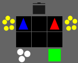
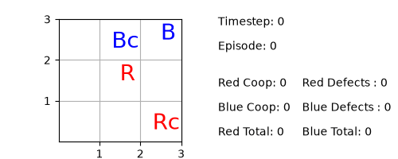

Policies
jaxmarl.policies provides programmed players with known types. Each type is a fixed policy, and the exact probability of every move it makes is recorded. Use them as partners or opponents whose type a learner has to work out, and as ground truth: the exact posterior over a player's type can be computed from any recorded run.
| Family | Env | Types |
|---|---|---|
overcooked_v2.soup |
Overcooked-V2, full view, 2 players | runner, plater, flex, lazy |
coin_game.reciprocity |
Coin Game | cooperator, defector, tit_for_tat, grim |


The GIFs come from python -m jaxmarl.policies.overcooked_v2.demo and python -m jaxmarl.policies.coin_game.demo, which also print the posterior over each player's type.
Concepts
- Policy: code only.
step(params, mem, seen)returns the new memory and the logits of the next move. - Type: the
paramsof a policy. A Population is one policy, a stacked set of types with names, and a prior over them. - Seat: an entry of
env.agents. Each seat played by a population draws a type from the prior at the start of every episode.
Every policy follows four rules, which make replay and the exact posterior possible:
- No randomness:
stepreturns logits, and the runner makes the only random draw. - Memory depends only on what the seat saw and did.
- Hidden choices, such as a goal, are summed over inside
step, never sampled. - A policy reads only its
view, by default the env's observation for the seat.
Roll out and infer the type
import jax
from jaxmarl import make
from jaxmarl.policies import rollout, type_posterior
from jaxmarl.policies.coin_game.reciprocity import make_population
env = make("coin_game")
population = make_population(env)
seats = {"0": population.only("defector"), "1": population} # seat 1 draws a type
traj = jax.jit(lambda key: rollout(env, seats, key, 100))(jax.random.PRNGKey(0))
log_post = type_posterior(population, env, traj, "1") # [T, K]
print(traj.type_idx[-1, 1], jax.numpy.exp(log_post[-1]))
rollout returns a Traj: states, observations, moves, the exact log-probabilities of every seat's move, rewards, and the type playing each seat. It can be vmap-ed over keys.
Train against a population
FixedSeats is a MultiAgentEnv in which some seats are played by populations; only the other seats are exposed, so JaxMARL wrappers and training scripts run on it unchanged.
import jax
from jaxmarl import make
from jaxmarl.policies import FixedSeats
from jaxmarl.policies.overcooked_v2.soup import make_population
base = make("overcooked_v2", layout="cramped_room")
env = FixedSeats(base, {"agent_1": make_population(base)})
obs, state = env.reset(jax.random.PRNGKey(0)) # env.agents == ["agent_0"]
truth = env.seat_state(state, "agent_1") # type_idx and next-move logp, for evaluation
Add a policy family
Subclass Policy, write a make_population(env) that stacks the types' params, and add a case to tests/policies/conftest.py. The conformance tests then check that recorded probabilities are distributions, that replay reproduces them (rule 2), and that FixedSeats leaves the env unchanged.
API
jaxmarl.policies.base.Policy
Code only. Build one per env; keep static things (layout, tables) on self.
init(params)
Memory at the start of an episode.
step(params, mem, seen)
Return (new mem, logits[A]).
view(env, state, obs, seat)
What this policy reads. Default: the observation the env emitted for the seat.
jaxmarl.policies.base.Population
dataclass
One policy, a finite set of named types for it, and a prior over them.
params is stacked: every leaf has a leading axis of length len(names). A single
type is a population of size one. This is a static object, not a pytree.
get(idx)
The params of type idx.
only(name)
The population of one that always plays the type called name.
sample(key)
Draw a type from the prior: (type index, its params).
jaxmarl.policies.play.rollout(env, seats, key, num_steps)
Play num_steps steps with every seat played by a population.
Episodes that end are followed by a new one (a new type is drawn for every seat), as with
env.step. Wrap the call in jax.jit for speed; it can be vmap-ed over key.
jaxmarl.policies.play.FixedSeats
Bases: MultiAgentEnv
env with some seats played by populations; only the other seats are exposed.
env = FixedSeats(make("overcooked_v2"), {"agent_1": population})
agents are the open seats. The state is a PlayState; the ground truth for a fixed
seat (its type, and the exact probabilities of its next move) is in state.seats and
can be read with seat_state. It is kept out of info because training scripts
reshape every info entry.
step is inherited from MultiAgentEnv: when an episode ends it calls reset,
which draws a new type and clears the memory of every fixed seat.
seat_state(state, seat)
The ground truth for a fixed seat: its type, memory and next-move probabilities.
jaxmarl.policies.play.Traj
Bases: NamedTuple
A recorded run of T steps. Arrays over seats follow env.agents order.
jaxmarl.policies.posterior.type_posterior(pop, env, traj, seat)
Exact log-posterior [T, K] over which type of pop is playing seat.
Row t is the posterior after the seat's moves from the start of the current episode up
to and including move t; it restarts from the prior at every episode, because a new
type is drawn then.
This is the omniscient observer: it conditions on the seat's own views, which another player may not be able to see. What a learner in another seat could infer is a different quantity.
jaxmarl.policies.posterior.replay(policy, params, env, traj, seat)
The move log-probabilities [T, A] that policy with params gives for
seat at every step of traj, had it been sitting there and made the recorded moves.